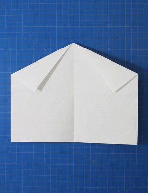
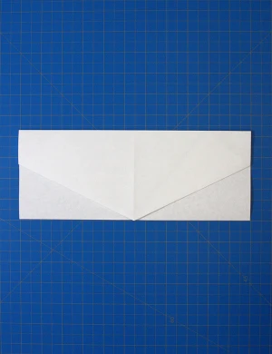
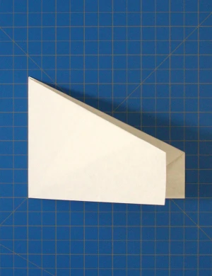

1Step 1
Fold the paper in half in both directions, forming 4 equal rectangles. Unfold.
Fold the paper in half in both directions, forming 4 equal rectangles. Unfold.

Fold the top corners to the center horizontal line.

Fold the top point down to the bottom edge.

Fold the top corners to the bottom of each side.

Fold the paper airplane in half towards you.

Fold out each side to create the wings. The body should be about a 2cm (3/4 inch) tall.
With a calm day and a level throw, expect only a short distance, since this design is not built for range. Wind, paper weight, and small crease errors all change the result.
在无风天气、水平投掷的情况下，大约能飞 距离很短，这款机型本身并不以远距为目标。风力、纸张克重和折痕误差都会改变实际结果。
A well-trimmed Star Wing should hold a very brief flight; the design is not aimed at hang time. Launching from a higher spot and keeping the wings level will extend it.
调整得当的 Star Wing 可以保持滞空时间很短，这类机型并不追求滞空。从更高的位置轻投、保持两翼水平，都能延长滞空时间。
It is a acrobatic and decorative stunt plane rated Medium difficulty. Fold it from Letter & A4 in 6 steps with no scissors required.
它是一款特技装饰机型，难度为中等，用Letter & A4折 6 步，全程不用剪刀。
Use a quick wrist snap and a fairly firm throw so the plane has enough speed to complete its maneuver.
用手腕快速抖动、稍用力投出，让飞机有足够速度完成动作。